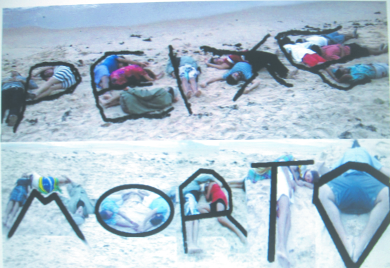

O livro “Peixe Morto” surgiu a partir da lista de emails “Submidialogia”, e foi lançado ontem nas redes.

Se nos emails os debates são velozes, aguerridos, ativistas e contam com uma profusão de referências e linkanias, no livro os parceiros tem espaço para se deter mais nos detalhes, para contar uma história de forma mais reflexiva e desenvolver o raciocínio com mais tranquilidade. Obrigada a todxs que enviaram textos. Estamos felizes com o resultado, mesmo sabendo que sempre poderia ter sido melhor!!!!!
Baixe aqui [4]